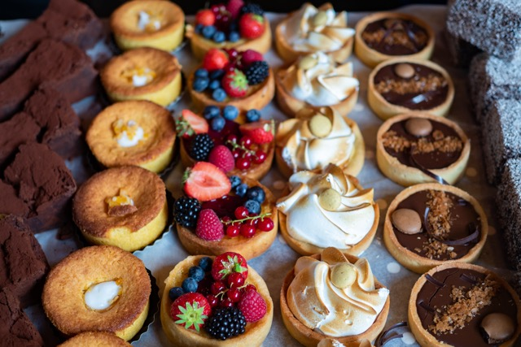

Food

Although it’s a “tea party” and not a “food party the food is quite important! It’d be boring with just tea, and you could do that anytime. To make it a real occasion, got to have a good menu that will stick with people.
Food Ideas
Here’s an article from the BBC with a list of food ideas for your tea party (You'll have to scroll down a bit, but also you can check out the other information).I think tea sandwiches, some scones and pastries are a good starting menu. But you can get creative with it!
Article Link
Food Inspiration Board
A Pinterest board of some cute and yummy snacks!
Food Pinterest Board Recipes
Need some recipes? Here are some basic ones to get you started! Personally Preppy Kitchen is one of my favorites.